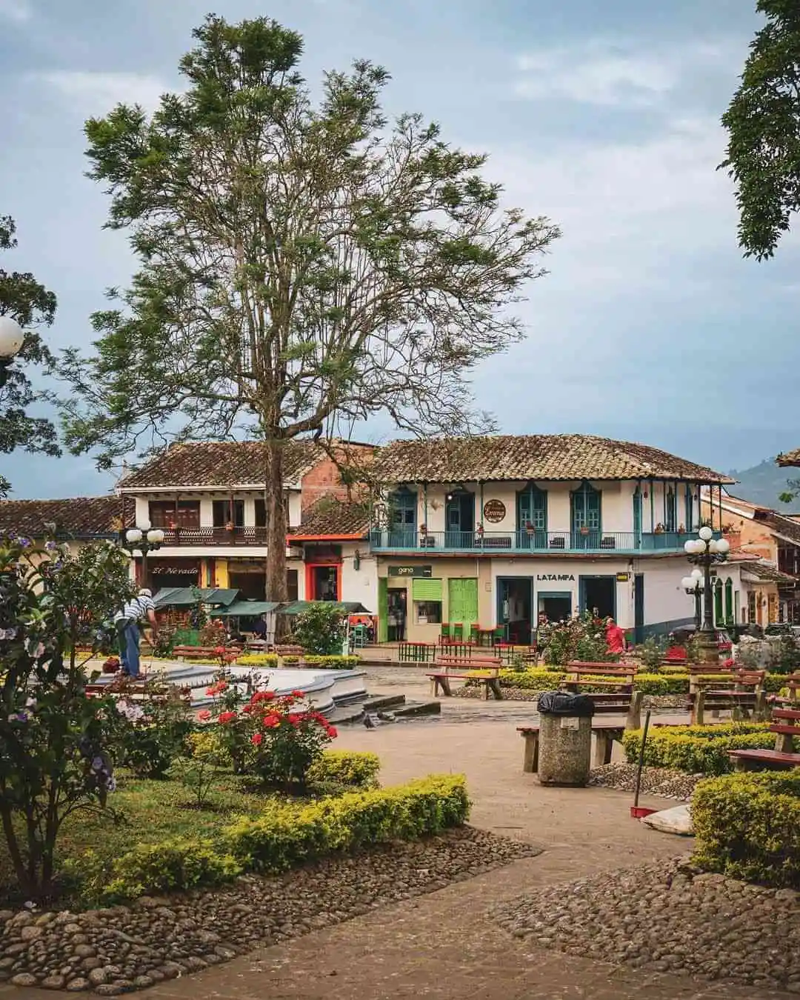
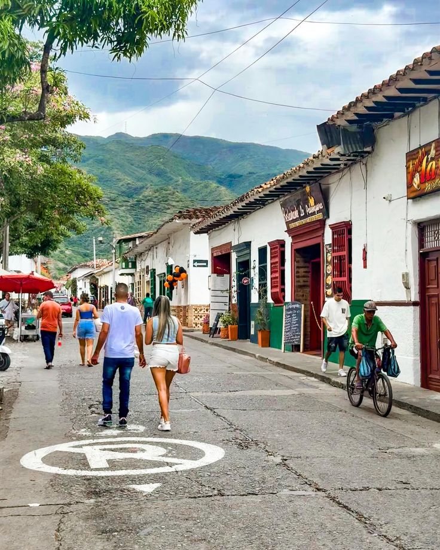
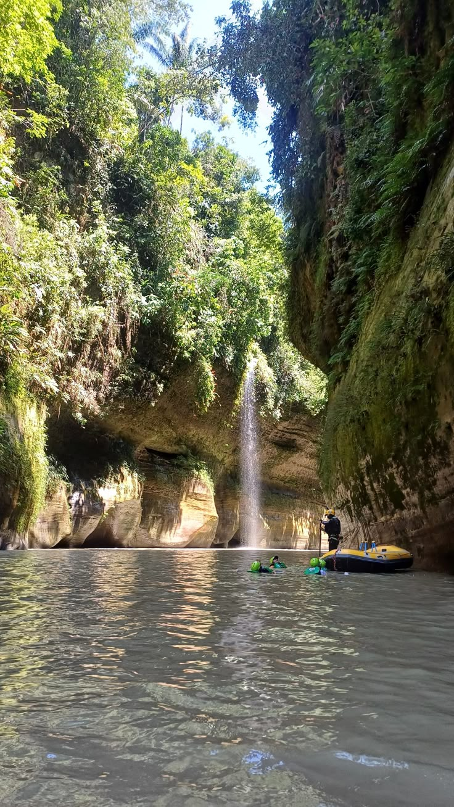
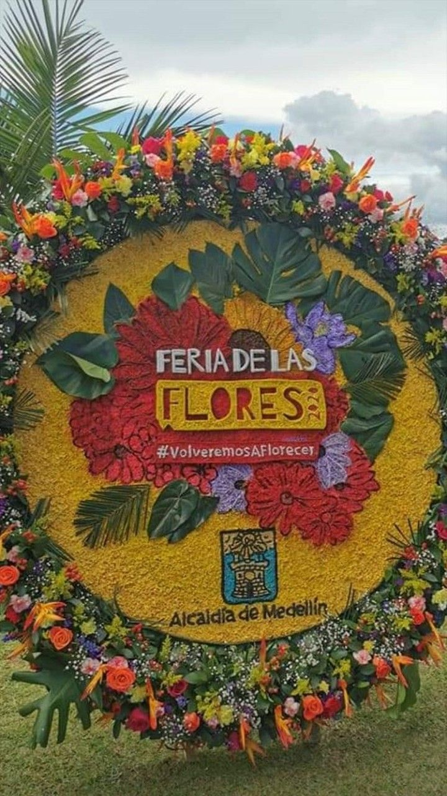

Descubre Antioquia
Antioquia es uno de los departamentos más visitados de Colombia por su riqueza cultural, su historia y sus paisajes únicos. Desde Medellín, la ciudad de la eterna primavera, hasta pueblos llenos de tradición como Santa Fe de Antioquia, este destino es ideal para viajeros nacionales e internacionales.
En A&G TOURS ofrecemos transporte turístico seguro y confiable para empresas, familias y grupos que desean recorrer Antioquia con puntualidad y confort. Organizamos viajes hacia Guatapé y la Piedra del Peñol, tours en la Comuna 13, recorridos en el MetroCable y excursiones personalizadas para conocer lo mejor de la región.
Nuestro objetivo es que vivas una experiencia de turismo en Antioquia con calidad y atención al detalle. Contamos con conductores capacitados y vehículos modernos que garantizan tu seguridad y comodidad en todo momento.
Parque Principal de Jardín
Jardín es uno de los pueblos más hermosos de Colombia, reconocido por sus calles empedradas, casas coloniales de colores y la Basílica de la Inmaculada Concepción. Su Parque Principal es un lugar lleno de vida, rodeado de flores, cafeterías tradicionales y un ambiente auténticamente paisa que enamora a los visitantes.
Guatapé y su piedra del peñol
Guatapé es famoso por sus coloridos zócalos y fachadas pintadas, que hacen de cada calle una obra de arte. Cerca del pueblo se encuentra la imponente Piedra del Peñol, un monolito de más de 200 metros de altura, desde cuya cima se disfruta una de las vistas panorámicas más impresionantes de Colombia.
Santa Fe de Antioquia
Santa Fe de Antioquia, la antigua capital del departamento, es un destino cargado de historia y arquitectura colonial. Sus calles empedradas, casas blancas con balcones de madera y plazas llenas de tradición invitan a recorrerla con calma. El famoso Puente de Occidente, una obra de ingeniería del siglo XIX sobre el río Cauca, es uno de sus atractivos más reconocidos.
Jericó
Jericó es un pintoresco pueblo del suroeste antioqueño, conocido por sus montañas verdes, miradores naturales y casas coloridas. Es cuna de Santa Laura Montoya, la primera santa colombiana, y cuenta con espacios culturales como el Museo de Arte Religioso y el Museo de Antropología. Desde el mirador Cristo Redentor se aprecian vistas espectaculares de todo el valle.
Cañón del Río Claro
El Cañón del Río Claro es una reserva natural que resalta por sus aguas cristalinas, cavernas de mármol y exuberante selva tropical. Es un destino ideal para los amantes de la aventura y la naturaleza, donde se pueden realizar actividades como rafting, senderismo, avistamiento de aves y exploración de cuevas.
Jardín Botánico de Medellín
El Jardín Botánico de Medellín es un espacio natural dentro de la ciudad que combina tranquilidad, ciencia y cultura. Alberga más de 1,000 especies de flora y fauna, un lago, mariposario y el icónico Orquideorama. Es un lugar perfecto para recorrer en familia, relajarse y disfrutar de actividades culturales al aire libre.
Feria de las flores
La Feria de las Flores es uno de los eventos más emblemáticos de Medellín, celebrado anualmente en agosto. Durante esta festividad, la ciudad se llena de color y alegría con desfiles, conciertos y exposiciones dedicadas a las flores, que son un símbolo de la región. El evento principal es el famoso Desfile de Silleteros, donde los campesinos de Santa Elena exhiben sus impresionantes silletas, arreglos florales llevados a cuestas.
Comuna 13
La Comuna 13 de Medellín es un ejemplo de transformación social y urbana. Conocida por su arte callejero, murales coloridos y su historia de resiliencia, este lugar se ha convertido en un destino turístico que muestra el talento de sus habitantes. Los tours guiados permiten conocer su cultura, música y el proceso de cambio que ha vivido la comunidad.
¡Contáctanos!